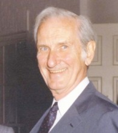

Please note: the AAS Obituaries are temporarily being hosted on this website while their full content is being ingested into the PubPub publishing platform newly adopted by the Bulletin of the American Astronomical Society. When the migration is complete, your existing links will take you to the final, migrated content. Contact peter.williams@aas.org with any questions.
William Gordon (1918-2010)
Bill Gordon was born in Paterson, New Jersey on January 8, 1918, and died in Ithaca, New York, on February 16, 2010. He is known as the engineer and ionospheric physicist who conceived and built the Arecibo giant radar/radio telescope. Bill graduated from Montclair State College in New Jersey and then in 1953 received his doctorate degree from Cornell University in electrical engineering, working under Henry Booker. During World War II he was in the Army where he studied the atmospheric conditions that affected radar transmissions.
In the mid 1950s he began investigating giant antennas capable of studying the earths ionosphere. He succeeded in raising funds from the US Defense Department to construct the 1000 ft in diameter radar/radio telescope near the city of Arecibo on the island of Puerto Rico. The telescope was completed in 1963 under Bill’s management, and he was its first Director.
The huge fixed spherical antenna surface was made of a thin wire mesh allowing it to operate at frequencies up to about 600 MHz (50 cm wavelength). The spherical surface required complex ‘line feeds’ to correct for the spherical aberration, but allowed the telescope to track celestial radio sources by moving the line feeds which were supported by a platform suspended 500 ft above the reflector surface. Its sky coverage declination range was from -2 to +38 degrees. The large collecting area of the telescope made possible the detailed study of the physical properties of the earth’s ionosphere. Measurements also included the rotation rates of the planets Mercury and Venus, radar imaging of the Moon and terrestrial planets. This new magastructure operated at low frequencies with its prime frequency at 430 MHz.
One of Bill’s passions was to make controlled experiments with the ionosphere. These so called ‘heating experiments’, used a powerful HF radar transmitting from 5 to 10 MHz, to heat the ionosphere near the plasma frequency. The Arecibo radar then would study the heated atmospheric section to investigate the changes in the physical parameters of the ionosphere.
Bill Gordon, in 1966, moved to Rice University in Houston, Texas, where he was a Distinguished Professor and Senior Administrator (Dean, Provost and Vice President).
The Arecibo Ionospheric Observatory in 1970 was designated as ‘The National Astronomy and Ionosphere Center ‘ (NAIC), and began to be funded as a National Center by the National Science Foundation. Cornell has remained the managing institution since that time. Early in the 1970s a grant from the NSF made it possible to replace the surface of the telescope with perforated rigid panels allowing it to operate at least up to 5000 MHz. In the 1990s the long imperfect line feeds were replaced by a complex Gregorian system that greatly increased the sensitivity of the telescope. This allowed the radiation to be collected at a focal point rather than via a long line. These and other major improvements have kept the telescope as the most sensitive radio/radar telescope in the world.
Observations of pulsars at Arecibo resulted in the 1993 Nobel Prize in Physics to Joseph Taylor and Russell Hulse who indirectly showed that gravitational waves exist, as Albert Einstein’s general theory of relativity predicts. In 1990 Aleksander Wolszczan discovered a special pulsar and he was able to show that it was surrounded by earth size planets. The exotic and photogenic giant radar/radio telescope has also been featured in prominent movies such as the James Bond ‘Goldeneye’ in 1995, and Carl Sagan’s ‘Contact’ in 1997.
Bill’s many graduate students from Cornell and Rice, simply adored him. One of his students, Dr. Richard A. Behnke, has said ‘Simply he was the greatest man I have known’. Bill was married to Elva Freile Gordon for 61 years. Elva died in 2001. Bill later remarried with Elizabeth Bolgiano Gordon.
In his career Bill received many awards. He was a member of the National Academy of Sciences and the National Academy of Engineering, and he also received several honorary Gold medals, including the Balth van der Pol Gold Medal from URSI, and the Arctowski Gold Medal of the National Academy of Sciences.
Photo credit: Cornell University
Obituary written by: Yervant Terzian (Cornell University)
Additional links:
- http://www.timesonline.co.uk/tol/comment/obituaries/article7102092.ece
- http://www.lib.utexas.edu/taro/ricewrc/00174/rice-00174.html
BAAS Citation: BAAS, 2011, 43, 030
SAO/NASA ADS Bibcode: 2011BAAS...43..030T